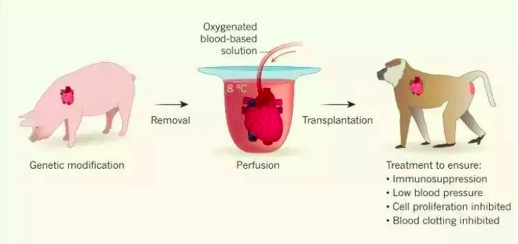
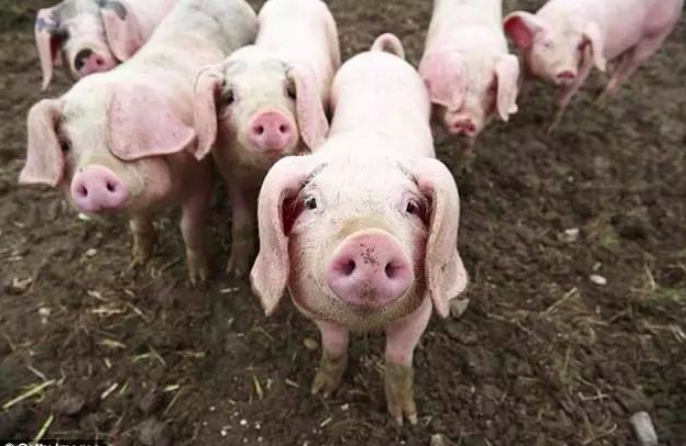

这是我的博客
2018年12月底，德国慕尼黑大学布鲁诺·瑞切特实验室的4只狒狒成功植入了猪的心脏了。
它们在接受猪心脏移植后，存活时间均超过了90天。
其中最长的一只存活了195天，远超过非人类灵长动物异种心脏移植的记录。
这项研究发表出版在12月《自然》的期刊上。这也意味着未来猪的异种移植可能会成功。

试想一下，假如你的心脏正在衰竭，焦急地等待一颗新的心脏。
好不容易等到合适的供体，医生此时却打电话告诉你：捐赠者不是人，而是一头猪。
这听起来像科幻桥段，但这还真可能就在不远的将来就会实现了。
不妨畅想一下，真将猪的心脏移植给人类，世界会变成什么样子？
肥猪们或许不会因成为器官捐赠者高兴地四处打滚，但养猪的人可能会乐开了花。
因为当它们成为心脏移植手术的供体后，或许能比现在卖上一个更好的价钱。
但如果未来身边的亲人胸腔里正跳动着一颗“猪心”，那么我们会不会对餐桌上猪排猪肉会有些忌惮？
当身份卑微的猪变成了能挽救人类生命的英雄后，我们与猪之间的关系是否会发生变化？
对于这一系列的问题，想必每个人都能给出不同的答案。
能确定的是，这种方式带来的道德困境还是小于所谓的“救命宝宝”。
比如为了给病重的孩子提供救命的器官而专门再生一个孩子。
毕竟猪原本就是用来供人类利用的动物。
而随着科学家日后找到引发排异反应的基因，并将其换成人类可以容忍的基因后，也具备了一些人类的属性。

看到这里，有没有改变你对猪的刻板印象呢？
由于猪在科研发展上具有的重大价值，所以在我国“模式动物表型与遗传研究设施”的大项目中，关于猪的部分也被称作“天蓬工程”。
该名字来源于妇孺皆知的‘天蓬元帅’，寓意是帮人类撑起一顶抵御某些疾病风险的‘天蓬’。
而摒弃了对猪的偏见之后，我们也希望猪年猪仔能带来更多的好运和惊喜。
正如段子里唱的的“猪年摸猪头，万事不用愁；猪年摸猪腿，顺风又顺水....."
*参考资料
Deschamps JY, Roux FA, Sa? P, Gouin E.History ofxenotransplantation.
Xenotransplantation. 2005 Mar; 12(2):91-109.
Cooper DK, Ekser B, Ramsoondar J, Phelps C,Ayares D.
The role of genetically engineered pigs in xenotransplantationresearch.
J Pathol. 2016 Jan;238(2):288-99. doi:10.1002/path.4635. Epub 2015Oct 7.